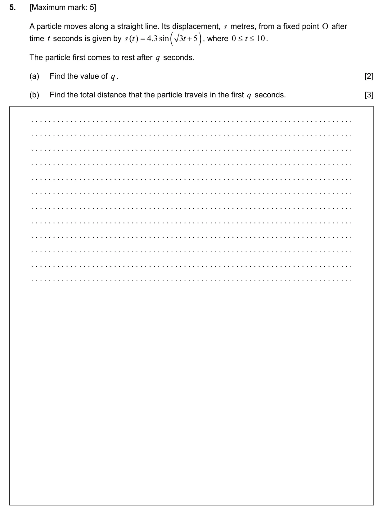
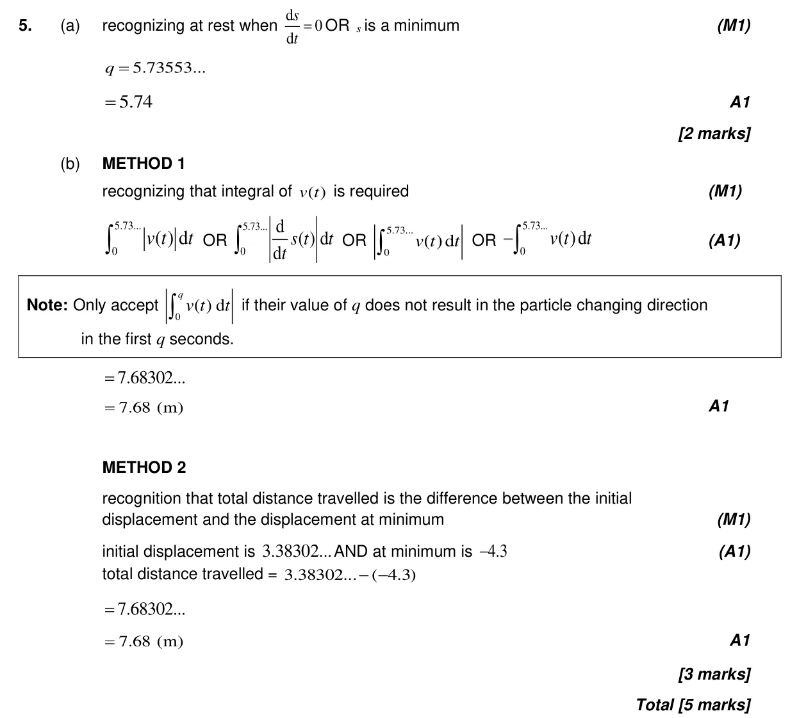

Appears in AA SL P2 Q5AA HL P2 Q4
5.9 Kinematics problems5.11 Definite integrals, areas under curve onto x-axis and areas between curves5.6 Differentiating polynomials n in Q, chain, product and quotient rules
Question

Markscheme
